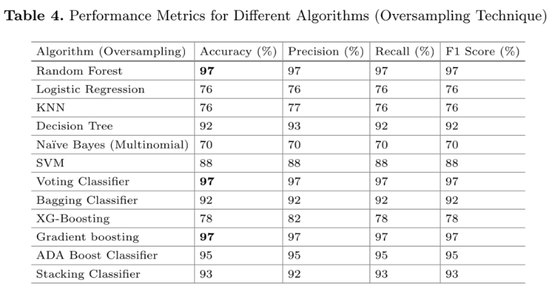

library(tidyverse)
library(pROC)
library(glmnet)
library(randomForest)
library(smotefamily)
set.seed(978545)
# load data
# impute single missing value with median of education (8)
df <-
haven::read_sav("../../../data/savry.sav") %>%
select(Reoffending, age, education, familyincome, contains("SAVRY"), P1:P6) %>%
replace_na(list(education = 8)) %>%
mutate(across(familyincome:P6, as.factor))
TEST_PROP = .2
N = nrow(df)The Paper
I recently found a paper published called “Advancing Recidivism Prediction for Male Juvenile Offenders: A Machine Learning Approach Applied to Prisoners in Hunan Province”. In it, the authors make use of a very small recidivism data set focusing on youth in Hunan province, which originally appears in a 2017 PLOS ONE article here: “Predicting Reoffending Using the Structured Assessment of Violence Risk in Youth (SAVRY): A 5-Year Follow-Up Study of Male Juvenile Offenders in Hunan Province, China”.
The authors of the new study explain how they can use machine learning to improve the prediction of recidivism (which, in of itself is a highly contentious topic). In general, it is a pretty harmless paper of virtually zero significance. They’re using an absurdly tiny data set to test out machine learning models that only really work well when you are flush with data. However, a single line stuck out to me when I was scanning their paper:
“The proposed ML models perform best on the oversampled dataset, as illustrated in Fig. 2.”
Uh oh.
Looking at the associated figure and table they show off some impressive metrics. Their random forest model has a precision and recall of 97%! On a recidivism prediction task this alone is highly suspicious. For example, in the competition I participated (and won in several categories), our model only averaged about .78 to .8. Why is theirs so good here? Well, it’s all about that line above. Let’s run through the data and explain:

The Data
Below, I pull the original data set from the PLOS One paper (thanks to the authors for making it publically available!). There is a single missing value for education, which I impute to the median value.
Doing it the Normal Way
The normal workflow in this case is to set up a test-train split, fit a model on the training data set, then evaluate the out-of-sample performance on the test set. Despite the very small sample size here I’ll just follow the bog standard approach to illustrate. A 20% test set gives us: \(246 - (246*.2) = 196.8\). So just under 200 cases to train on, which is really quite small.
Code
# indices of train-test
test_size <- round(N*TEST_PROP)
test_idx <- sample(1:N, test_size)
train_idx <- setdiff(1:N, test_idx)
# set up y and X
# one-hot encoding categorical vars
y <- df$Reoffending
X <- model.matrix(~ . - 1, data = df[-1])
# test-train splits
y_test = y[test_idx]
X_test = X[test_idx,]
y_train = y[train_idx]
X_train = X[train_idx,]Despite the authors of the previous paper using some boosting methods, this data is far, far too small to make use of those approaches usefully. Here, I’m just fitting a logistic regression with no regularization and a random forest with 500 trees.
# fit multiple linear models
# logit, no regularization & random forest
fit_1_glm <- glmnet(X_train,y_train, family = "binomial", alpha = 0, lambda = 0)
fit_1_rf <- randomForest(X_train ,as.factor(y_train))Now we just evaluate the area under the curve:
pred_1_glm <- as.numeric(predict(fit_1_glm, X_test, type = 'response'))
pred_1_rf <- as.numeric(predict(fit_1_rf, X_test, "prob")[,2])
# get auc
roc(y_test, pred_1_glm, quiet = T)$aucArea under the curve: 0.7482roc(as.factor(y_test), pred_1_rf, quiet = T)$aucArea under the curve: 0.7197So about .74 for the logistic regression and .72 for the random forest. Not great, not terrible.
Doing it with SMOTE
So the argument with SMOTE is that training models on data sets with very large imbalances in positive vs. negative cases is that the models only learn from the negative cases and not the positive ones. A good example might be a fraud data set where you have 100,000 legitimate credit card transactions and only 500 cases of fraud (so something like .5%). SMOTE is intended to help with training a model by synthesizing a balanced data set where the ratio of positive to negative cases are much closer to 50/50. Without going too much into it, this actually rarely solves and problems and often induces some.
What I suspect the authors of this paper did is that they generated a SMOTE data set with a balanced ratio of positive to negative cases, then created a test-train split from that data set, and evaluated their metrics on a test data set derived from the SMOTE model. That is very, very wrong.
Doing SMOTE the wrong way
So let’s try it. I’ll synthesize a SMOTE data set from the full set of cases, then walk through the whole process using only the synthesized data. This creates a data set with 126 new observations, and brings the balance of positive to negative cases to almost exactly 50/50 (rather than 25/75 in the original).
# create a smote dataset from the FULL dataset, then split
smote_df_full <- data.frame(X,y)
smote_model_full <- SMOTE(smote_df_full[-63], target = smote_df_full[63], dup_size = 2)
X_smote <- smote_model_full$data[-63]
y_smote <- as.numeric(smote_model_full$data$class)
table(y_smote)y_smote
0 1
183 189 Now we just pull a test-train split on the SMOTE data, then fit the models.
# indices of train-test
test_idx_smote <- sample(1:N, test_size)
train_idx_smote <- setdiff(1:N, test_idx_smote)
# test-train splits
y_test_smote = y_smote[test_idx_smote]
X_test_smote = as.matrix(X_smote[test_idx_smote,])
y_train_smote = y_smote[train_idx_smote]
X_train_smote = as.matrix(X_smote[train_idx_smote,])
# fit and evaluate models
fit_2_glm_smote <- glmnet(X_train_smote,y_train_smote, family = "binomial", alpha = 0, lambda = 0)
fit_2_rf_smote <- randomForest(X_train_smote ,as.factor(y_train_smote))
pred_2_glm_smote <- as.numeric(predict(fit_2_glm_smote, X_test_smote, type = 'response'))
pred_2_rf_smote <- as.numeric(predict(fit_2_rf_smote, X_test_smote, "prob")[,2])
# get auc
roc(y_test_smote, pred_2_glm_smote, quiet = T)$aucArea under the curve: 0.8408roc(as.factor(y_test_smote), pred_2_rf_smote, quiet = T)$aucArea under the curve: 0.9765Wow! Look at that, we just increased our AUC for the random forest model from .72 to .97! But what if we do what we’re supposed to and see how it works on real out-of sample data?
Doing SMOTE the (less) wrong way
Same as above, except we create a SMOTE data set from our original training data and then we evaluate our model on the original test data set that is not synthetically balanced.
smote_df <- data.frame(X_train,y_train)
smote_model <- SMOTE(smote_df[-63], target = smote_df[63], dup_size = 2)
X_smote <- smote_model$data[-63]
y_smote <- as.numeric(smote_model$data$class)
fit_3_glm_smote <- glmnet(X_smote,y_smote, family = "binomial", alpha = 0, lambda = 0)
fit_3_rf_smote <- randomForest(X_smote ,as.factor(y_smote))
pred_3_glm_smote <- as.numeric(predict(fit_3_glm_smote, X_test, type = 'response'))
pred_3_rf_smote <- as.numeric(predict(fit_3_rf_smote, X_test, "prob")[,2])
roc(y_test, pred_3_glm_smote, quiet = T)$aucArea under the curve: 0.7077roc(as.factor(y_test), pred_3_rf_smote, quiet = T)$aucArea under the curve: 0.7335Oh.
Summary
In summary, if you wrongfully evaluate your model that was trained on a SMOTE data set against a hold-out sample from that same SMOTE data your out-of-sample metrics will be falsely confident. It is much easier to perform classification on data that are artificially balanced. However, actually using these models in real life entails data that almost never follow this.
Finally, I don’t mean to focus on these authors specifically. The analysis they are doing is with some good intentions, but is mostly misguided. The data here are mostly unsuited for examining more complex models and processes. In addition, what I see here is a common issue for many data analysts, which is why being thoughtful and careful at the start of your analysis is very important.